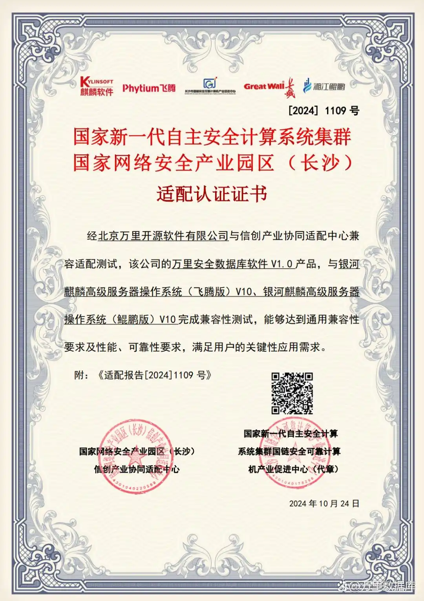

省级认证！万里数据库与湖南信创适配中心完成“两芯一生态”适配
近日，万里数据库与湖南省信创产业协同适配中心完成了“两芯一生态”的产品兼容适配工作，并获得证书，安全数据库GreatDB产品能力及国产生态体系建设成果获得省级适配中心验证。

▲ 湖南省信创产业协同适配中心认证证书
湖南省信创产业协同适配中心（以下简称“适配中心”）是在湖南省委省政府指导下，由湖南省工信厅授牌，麒麟软件牵头运营的政府主导、企业主体、多企参与、各方联动的综合性平台。
适配中心以湖南为核心，辐射并服务全国，立足本土技术策源的飞腾CPU和银河麒麟操作系统技术路线，与架构相近、性能领先的华为鲲鹏CPU体系协同适配，创新提出独具特色的“两芯一生态”网信产业模式，汇聚了从底层到整机全产业发展链条上的多个企业，起到全国性示范引领作用。适配中心充分凝聚产业集群，通过生态单品适配、集成调优及测试、生态体系图谱构建等，打造统一且丰富的产业生态，面向生态厂商和用户提供服务，全面承担起湖南省网信适配工作的支撑和运营工作。
万里数据库作为首批通过安全可靠测评的国产数据库厂商，也是自主网信产业链上的重要成员。公司充分发挥自身在数据库技术研发与应用领域的经验优势，积极链接国产生态上下游企业，形成全栈国产适配体系。
在信创生态建设上，万里数据库从未放慢步伐，持续通过产品创新与技术研发获得越来越多业界的认可，与麒麟软件、统信软件、龙芯中科、飞腾等业内优秀的生态合作伙伴共同完成兼容性测试与联合认证，携手助力大批信创建设项目落地，产品竞争力再提升一个量级。
万里安全数据库软件GreatDB是公司自主研发的核心数据库产品，100%兼容MySQL，可根据用户需求采用集中式或分布式部署。产品具备动态扩展、数据强一致、集群高可用等众多企业级特性，并提供丰富的安全功能特性，满足业务高并发、高扩展性、高安全性等需求，是替换开源MySQL数据库的最优国产数据库选择。
凭借其强大的兼容适配性和高效的运行性能，GreatDB完成了与麒麟高级服务器操作系统 （飞腾版）V10、麒麟高级服务器操作系统 （鲲鹏版）V10的兼容认证，并获得了适配中心及各厂商的一致认可，进一步推动国产替代工作与国产生态体系打造。
如今，万里数据库的安全数据库GreatDB已获得超600款国产软硬件产品的兼容认证，在国产兼容适配上优势凸显。信创适配体系涵盖 CPU、服务器、操作系统、中间件、虚拟化、云平台、集成与应用软件厂商、安全产品、工具类等全产业链条，服务于金融、电信、能源、教育、医疗、交通、政府等众多关键行业领域，凭借优秀的产品实力和高质量服务赢得良好市场口碑。
未来，万里数据库将继续坚持开放共赢的合作理念，落实自主创新精神，携手更多生态伙伴积极开展核心技术联合攻关，共同构建更安全、更扎实的国产生态圈，全面助推区域产业发展和网络强国建设，为广泛客户带来更优质的国产生态产品及服务！